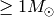
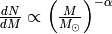
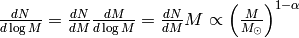
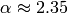

Example: Salpeter stellar mass function¶
Motivation¶
We have seen gradient methods, which are efficient but not very robust.
And we have seen the Simplex algorithm, which is robust but not very efficient.
Let us now try to discuss another class of fitting/optimisation algorithms, which try to be both - efficient and robust. This new class is broadly summarised as Monte-Carlo methods.
Let us do this by considering an astrophysical example that also demonstrates that not all pratical problems can be expressed in terms of least squares.
Salpeter stellar mass function¶
Salpeter (1955) found that for stars of masses  the mass distribution is given by a power law:
 or 
He found .
Say you are the first person to have the catalogue of stellar masses from the Gaia mission and you want to estimate  from the data. What do you do? Keep in mind that Gaia will observe a few billion stars!
from the data. What do you do? Keep in mind that Gaia will observe a few billion stars!
Outline¶
First, we discuss how to draw samples from the Salpeter SMF in order to simulate data for testing purposes during algorithm development. This naturally leads us to Monte-Carlo sampling.
Second, we discuss parameter optimisation, i.e., how to fit for if you are given data. This brings us to the Metropolis-Hastings algorithm.
Finally, we discuss an improvement of the Metropolis-Hastings algorithm, which is Hamiltonian Monte-Carlo.